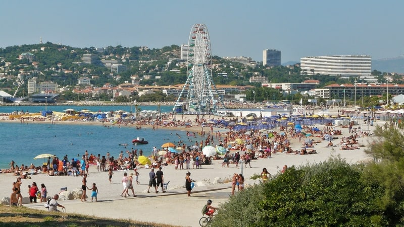
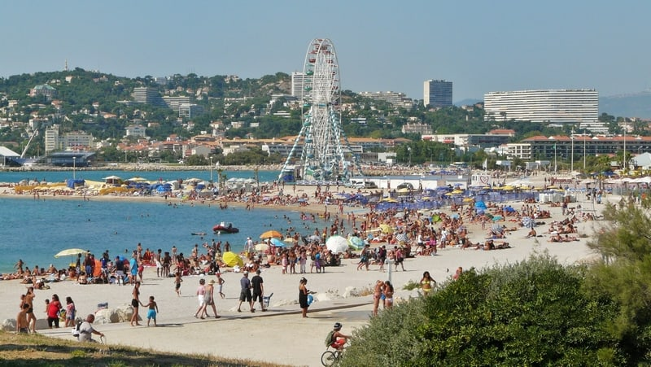
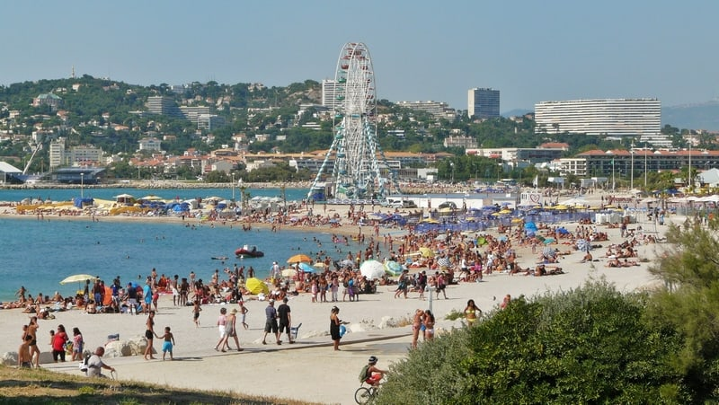

La ville dispose de plusieurs endroits parfaits pour les baignades en famille, en solo ou entre amis. Découvrez ses Calanques, mais également ses lieux de baignade secrets, propres aux marseillais qu’on vous dévoile ici ! Comment parler de Marseille sans évoquer ses plages et sa Méditerranée ?
Marseille compte près de 21 plages qui bordent son littoral, naturelles ou artificielles, de sable ou de galets, de Corbières à la Pointe Rouge. De nombreux agents municipaux œuvrent tout l’été pour assurer aux Marseillaises, aux Marseillais et aux touristes, les meilleures conditions d’accueil et de sécurité sur le littoral phocéen. La Ville de Marseille s’efforce, à travers des aménagements et des prestations diverses, de rendre ces lieux toujours plus agréables, pour un environnement de qualité. Pour assurer la sécurité des eaux de baignade, 21 points, répartis sur tout le littoral, font l’objet d’une surveillance permanente pendant la période estivale. Chaque saison, à la demande du service de la Santé publique et des handicapés, des analyses d’eau sont effectuées quotidiennement pour permettre des ouvertures de plages en fonction des résultats Dès que des agents pathogènes sont décelés en quantités trop importantes dans l’eau, l’accès à la baignade est momentanément limité.
La Plage du Prado
Les plages du Prado s’étendent sur plusieurs kilomètres non loin de l’avenue du Prado, et du parc Borély. Elles sont facilement accessibles en voiture, en vélo, en transports en commun ou à pied depuis les quartiers environnants. Chacune d’entre elles a ses propres spécificités et son propre charme. Elles offrent des équipements et des services pour rendre votre journée à la plage plus confortable. Vous y trouverez des douches, des toilettes, des cabines de change et des casiers à louer. Des restaurants, des bars et des glaciers sont également présents le long de la promenade. Elles sont très populaires auprès des habitants et des touristes, en particulier pendant la période estivale. L’ambiance y est animée et conviviale, avec des familles, des groupes d’amis et des amateurs de sports nautiques qui se rassemblent pour profiter du soleil et de la mer.

La plage des Catalans
C’est LA plage la plus accessible quand on se trouve dans le centre de Marseille. Ce n’est pas la plus belle, ni celle qui a l’eau la plus bleue, mais elle est à 15 minutes à pied du Vieux Port et est idéale pour aller piquer une tête à l’improviste. N’hésitez pas à dépasser les eaux et les foules stagnantes du bord pour profiter des eaux plus profondes, moins fréquentées et plus propres. La plage des Catalans est également connue pour ses terrains de Beach Volley qui attirent joueurs et spectateurs tout au long de l’année. Vous pourrez flâner en regardant les parties endiablées en vous asseyant sur les bancs situés plus haut.

La Plage du Prophete
Située dans le 7ème arrondissement de Marseille, découvrez une plage emblématique : la plage du Prophète. Cette dernière est l’une des plus populaires et des plus anciennes de toute la Cité Phocéenne. Étendue sur 260 mètres, la plage du Prophète est un lieu d’exception, propice à la détente et à la baignade. Profitez de toute la beauté de la côte méditerranéenne, que vous souhaitiez vous prélasser au soleil, vous baigner ou faire du beach-volley, la plage du Prophète offre un cadre agréable pour passer du temps au bord de la mer..


La Pointe Rouge
A proximité du petit port du même nom, qui propose de nombreuses activités nautiques comme la voile, plongée, aviron, kayak, se trouve la plage. C’est la plus grande plage de Marseille, constituée de sable, elle est protégée des vents et reçoit un public familial populaire. En bordure se trouvent de nombreux restaurants, bars, pubs qui assurent le ravitaillement et l’ambiance. En été, la surveillance de la baignade est également assurée. Attention ce petit endroit du bout du monde est très fréquenté durant la saison estivale, et peut se transformer en piscine noire de monde. Vous voila prévenus !


La Plage de l'Estaque
Les plages de l’Estaque, également appelées Plages de Corbières, ont été créées en 1970 par la ville de Marseille avec le jardin de Corbières situé juste derrière. La municipalité voulait rendre aux habitants du Nord de la ville un accès à la mer dont ils avaient été privés depuis la création du port de l’Estaque. Profitez donc de votre excursion plage pour aller flâner dans ce jardin à la topographie et la végétation atypique qui mêle flores naturelle, méditerranéenne et subtropicale.